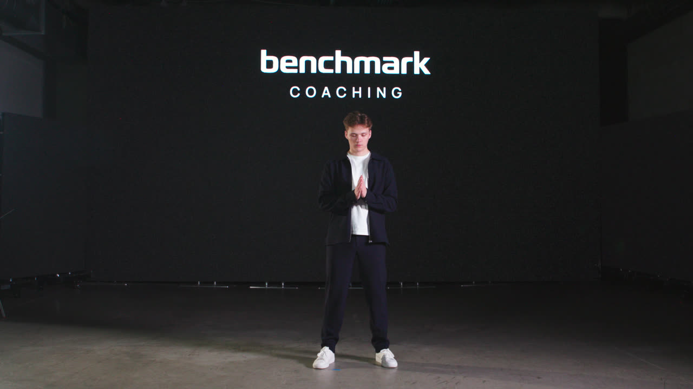
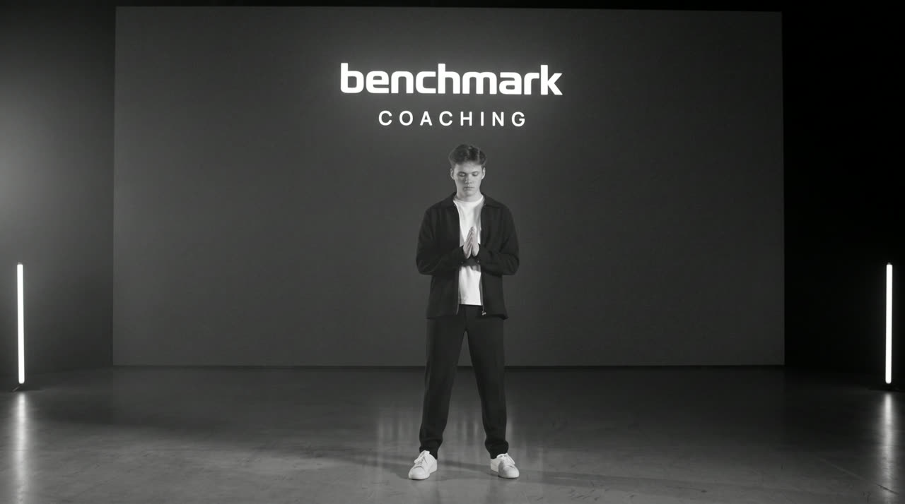
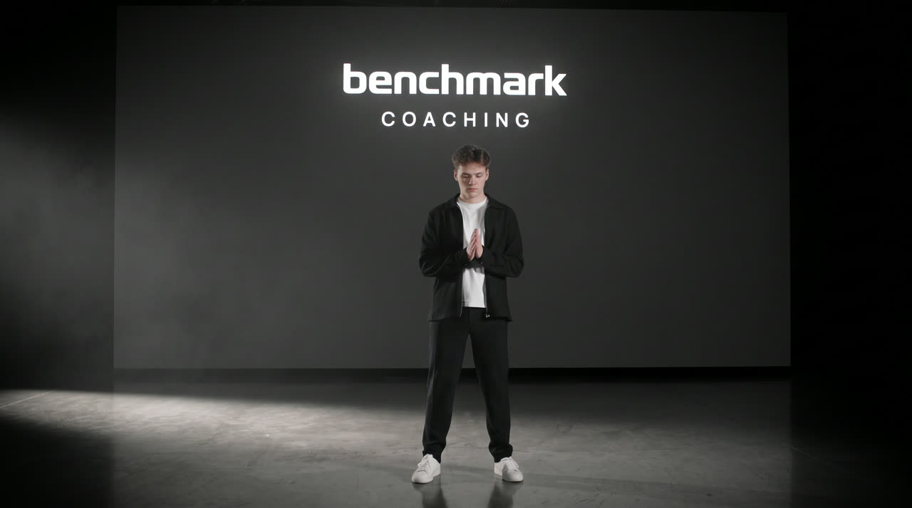
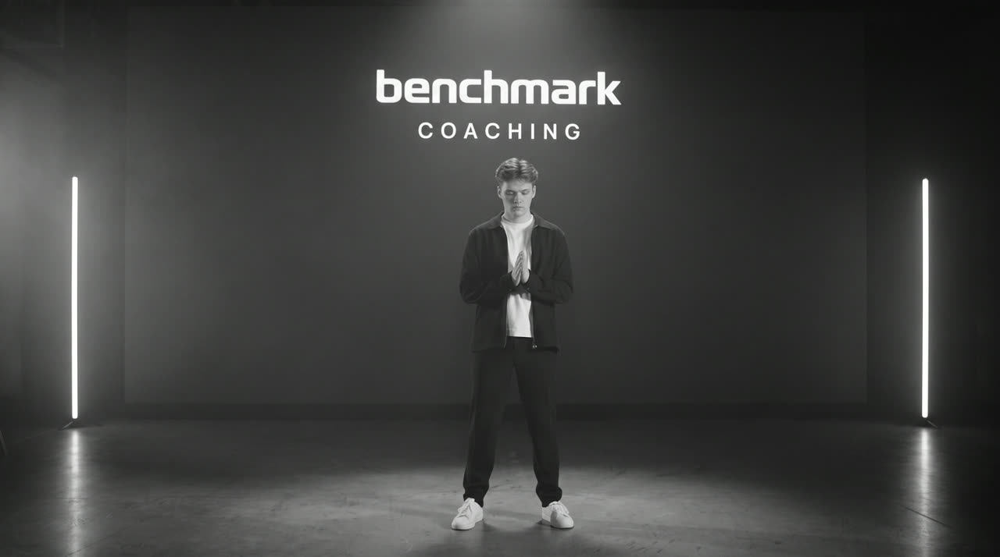

Everything from Paul's three review videos, mapped beat by beat onto the current cut — what's there now, what he wants, who owns it, and which motion graphics are already built and waiting. The current cut runs 2:51.8 plus the cold open.
Paul's ask: "I want them to continuously sync on how this is going to all fit together." Luigi and Mae build sections; Cedrick assembles. Sync often enough that the seams are decided before Monday evening, not discovered at the end.
All of these were generated with AI tooling and render from code, which means anything here can be re-timed, re-worded or re-coloured on request — the product name, the numbers and the durations are variables, not baked pixels. Every one also exports as a ProRes 4444 alpha overlay at 4K, so it drops straight onto V2 in Premiere over a cut. Hover any card to play.
These aren't stock transition packs. Each one is a small program: the Benchmark wordmark is real vector geometry, the motion is a timeline, and the look is generated at render time. Practically:




Measured off a graded still, not eyeballed:
Rendered from the real frame so you can see the target rather than guess at it. The recommendation combines haze, one low floor rake light, and two vertical tube lights standing in the dead corners — all of it achievable in camera.
In 05-footage/STAGE-LOOKDEV/ with full measurements.
Paul flagged that someone should own the AI renders / scene cleanup. It isn't allocated yet — it needs a name before Monday.
Because the camera is locked off, the post fix needs no roto and no tracking:
one overlay pair works across every stage shot. A stage-dress kit exists that buries the
wall base, shapes the corners and rebalances left-to-right.
The course footage is flat log-profile. Ungraded it reads milky and desaturated, and it will not cut against the stage material, which is near-black with a bright LED wall. Two very different worlds that have to feel like one film.
The 14 graded B-roll clips in the motion-graphics assets were all built with this. Match to them and the film holds together:
App UI keeps its own real colours — green swing plane, amber flag, blue selection. Never re-grade the product UI to match the film.
Throughout the entire video we can play off of somewhat ambient music at certain moments.
I don't want cringy hype.
Within each vignette maybe there's specific sound design that exists there as well. It can be its own little vibe.
Taken off the Whoop keynote spectrally, so it's numbers rather than vibes:
Full cue sheets per transition in SOUND-DESIGN.md.
Each section can carry its own sonic identity — the range breathes differently from Atlas, which breathes differently from the close. The through-line is the music bed and the transition grammar; the texture inside each vignette can change.
The transition graphics were built with long enough cover moments to slide a few frames either way, so impacts can be moved onto the beat grid without breaking the visuals.
These are spoken in the current VO and are not yet signed off. They are the only things that can genuinely block publication: